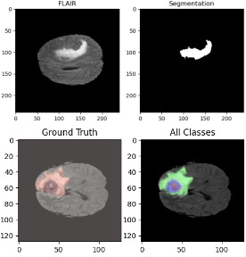
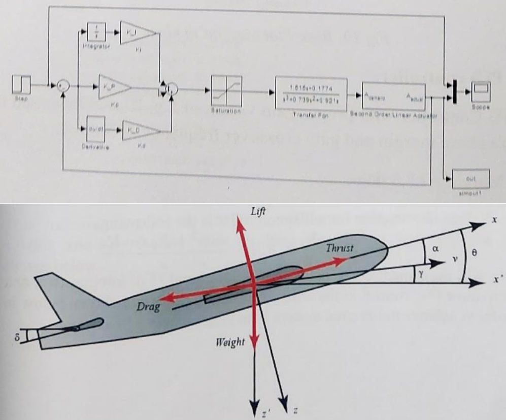
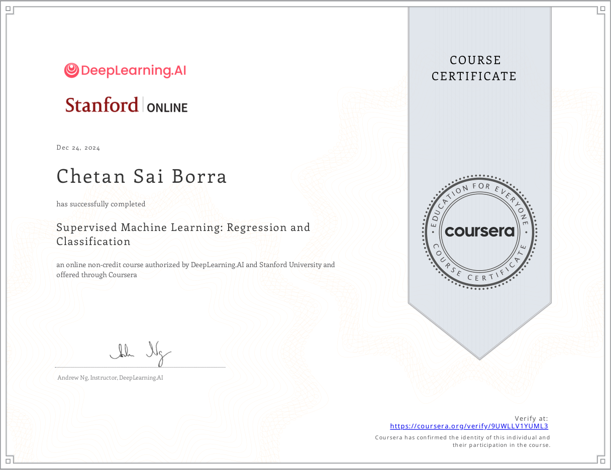
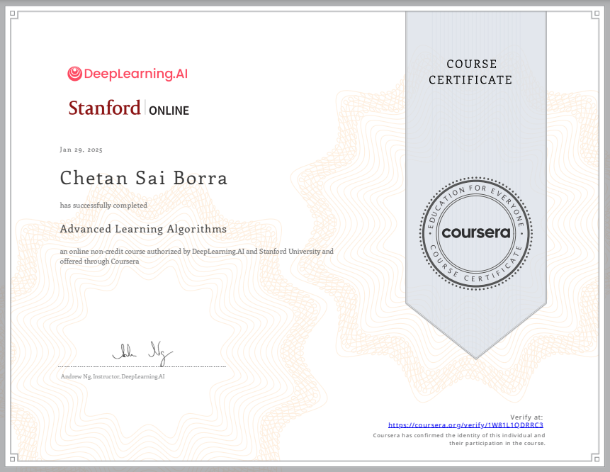

Education
Deepening theoretical foundations and engineering systems for machine learning and robotics.
Master of Science in Computer Engineering
Relevant Coursework
Bachelor of Technology in Electronics and Communication Engineering
Strong academic foundation in software architectures, embedded hardware design, signal processing, and numerical optimizations. Actively bridged systems theory with software engineering.
Academic & Research Experience
Translating academic models into functional aerospace and medical prototypes

Research Assistant
Vellore Institute of Technology · Dec 2023 – May 2024
Led an exploration on deep convolutional networks for medical imagery. Developed and optimized W-Net architectures to segment brain tumor sub-regions inside MRI volumes, accomplishing 90%+ accuracy and 72% Mean IOU on the BraTS dataset.

Research Intern
Defence Research & Development Laboratory (DRDL) · May 2023 – Jul 2023
Simulated high-stability control laws for aerospace applications. Formulated aircraft pitch control matrices using PID networks in MATLAB/Simulink, introducing numerical fine-tuning parameters to improve stability thresholds by 11%.
Certifications
Professional specializations in core AI, cloud architecture, and algorithms

Supervised Machine Learning
Stanford & DeepLearning.AI
Regression & Classification
Advanced Learning Algorithms
Stanford & DeepLearning.AI
Neural Networks & Trees